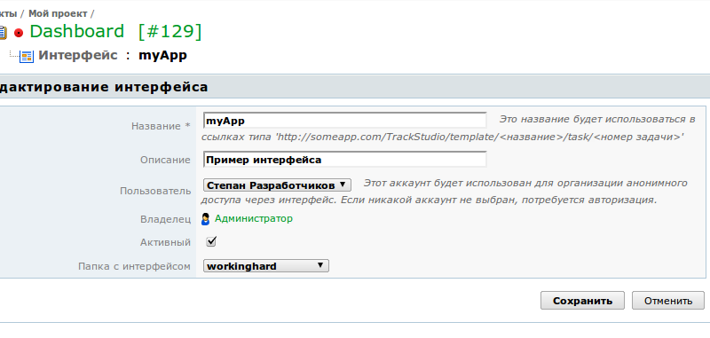

|
<< Click to Display Table of Contents >> Navigation: Rus > Руководство разработчика > Как писать скрипты и триггеры в TrackStudio > Как быстро и просто сделать свой интерфейс для TrackStudio |
Интерфейсы (templates) используются в TrackStudio для специального доступа к системе. Например, если вы хотите организовать анонимный доступ (без регистрации) к своему проекту. Или хотите предоставить своим сотрудникам альтернативный, упрощенный интерфейс с ограниченной функциональностью. Или, напротив, хотите расширить функциональность интерфейса с помощью, например, технологии Ajax.
Вы можете написать интерфейс TrackStudio на языке разметки Freemarker, а затем подключить его к вашему экземпляру. Для этого файлы интерфейса нужно разместить внутри папки, а папку, в свою очередь, разместить в ./etc/plugins/web. Затем интерфейс нужно подключить в TrackStudio через меню "Интерфейсы"

При подключении интерфейса вы можете выбрать учетную запись пользователя, которая будет использоваться для всех действий через этот интерфейс (при этом пользователям не нужно будет входить в систему). Либо вы можете потребовать от пользователей входить под своими учетными записями, если они есть, либо регистрироваться. В последнем случае пользователь будет перенаправлен на страницу unauthorized.ftl вашего интерфейса. Вы можете организовать там как форму входа, так и форму регистрации.
Форма входа, например, задается таким кодом:
<form action="" method="post">
Login: <input type="text" name="template_login">
Password: <input type="text" name="template_password">
<input type="submit">
В качестве примера реализации интерфейсов приведем экранные снимки, любезно предоставленные Артемом Зубковым